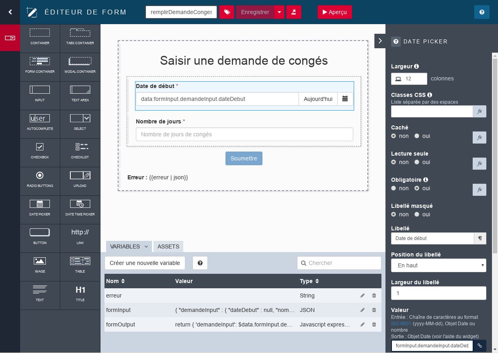

JOUR 1
Thalía Cruz
Le Bonita Camp
Quoi ? Maîtriser les principaux concepts nécessaires à la création d'applications Bonita
Qui ? Equipe projet et développeurs qui débutent avec Bonita
Comment ? Cours théorique et pratique basé sur un exemple concret
Programme
Partie 1 - Tout pour créer une première application
- Projets DPA
- Bonita Platform et ses composants
- Phases d'un projet DPA avec Bonita
- Maven, Git et composition de projet
- Modélisation de processus
- Gestion des données
- Formulaires de processus
- Gestion des acteurs (qui fait quoi)
Programme
Partie 2 - Pour aller plus loin dans le développement
- L'architecture de Bonita Platform
- Les API Bonita
- Données - concepts avancés
- Extensions
- Pages et applications
- Fragments
- Profils d'utilisateurs
- Déploiement
Avant de démarrer
- Installez la dernière version de Bonita Studio (cf document exercices)
- Ouvrez le site des exercices du Bonita Camp : https://bonitasoft-community.github.io/bonita-camp/fr/00-introduction.html
- Nous recommandons d'utiliser
 ou lors de vos développements
ou lors de vos développements
Projet DPA : des applications basées sur l'exécution de processus
- Différents processus s'exécutent dans un moteur BPM
- Ces processus manipulent un même ensemble de données
- Les IHM proposent des vues centrées processus, ou données, ou les deux
- Elles fournissent une expérience utilisateur riche et à forte valeur ajoutée
- Pour les métiers et les clients, mais aussi les administrateurs
- Déployées et restituées dans un navigateur web ou sur mobile
Projet DPA : Applications personnalisées
Orientées données métier

Bonita User Application
Application native de suivi des cas et des tâches (orientée exécution de processus)

Bonita Administrator Application
Application native d'administration et de suivi de l'exécution des processus

Bonita Platform
Plateforme d'automatisation et d'optimisation des processus d'entreprise. Open Source et extensible.
 de code pour construire une application métier
de code pour construire une application métier
 De nombreux assistants graphiques pour définir les éléments facilement
De nombreux assistants graphiques pour définir les éléments facilement
 Travail d'équipe facilité entre le métier et la technique
Travail d'équipe facilité entre le métier et la technique
 Suivi et optimisation de l'exécution des processus
Suivi et optimisation de l'exécution des processus
Composants de Bonita Platform
Trois composants principaux :
- Bonita Studio, l'environnement de développement
- Bonita Runtime, l'environnement de production
- Bonita Continuous Delivery
 , l'environnement de déploiement continu des projets Bonita (Editions Souscription)
, l'environnement de déploiement continu des projets Bonita (Editions Souscription)
Bonita Studio : environnement de modélisation collaboratif
 |
|
IDE basé sur Eclipse ; nécessite l'utilisation d'une JVM (embarquée dans Bonita Community)
UI Designer : création des IHM
|  |
|
Bonita Runtime : le chef d'orchestre
Nécessite :
- Serveur d'application Java EE
- Base de données transactionnelle avec JDBC

Les 4 applications Bonita natives
2 applications par défaut et 2 applications "coeur de plateforme", embarquées dans Bonita Runtime
- Application Utilisateur

- Application Administrateur

- Application Super Administrateur

- Répertoire d'applications

Application Super Administrateur
Application native de démarrage et d'administration avancée de Bonita Runtime
Répertoire d'applications
Une URL unique centralisant toutes les applications accessibles à l'utilisateur connecté

Phases d'un projet Bonita
Le démarrage
Maven, Git et composition de projet
- Un projet Bonita est un projet

- Nom, version, description
- Maven IDs : groupID, artifactID
- Les projets sont intégrés à un workspace en local ou à distance
- Récupération automatique des dépendances
Maven, Git et composition de projet
Les projets peuvent être partagés avec Git  depuis Bonita Studio
depuis Bonita Studio
Maven, Git et composition de projet
Eléments structurants d'un projet
Maven, Git et composition de projet
Accès à la vue d'ensemble ou à l'explorateur dès la création du projet

Maven, Git et composition de projet
Rajouter au besoin des extensions, pour composer le projet
Modélisation de processus : le BPMN
Notation standardisée. Les éléments essentiels :
 | Pool : définition de processus |
| Lane : clarifie qui fait quoi | |
 | Événement de début : le démarrage d'un processus |
 | Tâche humaine : impliquant un utilisateur |
| Tâche automatique : exécutée par le système | |
 | Événement de fin : archivage de l'instance |
| → | Transition : construction des séquences d'éléments |
Les portes logiques
3 types de portes logiques :
 | Exclusive |  |
 | Parallèle | |
| Inclusive |
Bonne pratique : utiliser les portes de manière explicite et symétrique pour améliorer la lisibilité et la robustesse
Les événements
Interviennent tout au long des processus

Evénement en bordure : déclenche un chemin alternatif
Les activités appelantes et les sous-processus
Déclenche un sous-processus
Met le processus parent en attente

Les itérations
| Trois types d'itérations : | |
| Boucle standard | |
| Multi-instanciation en parallèle | |
| Multi-instanciation en séquence |

Exercice 1
Modélisation d'un processus simple
Téléchargez les corrections à partir de GitHub
https://github.com/Bonitasoft-Community/bonita-camp/releases
Exercice 2
Ajout d'une minuterie à la tâche de validation
Gestion des données :
Les différents types
Données de processus
- Paramètres
- Documents
- Variables
Données métier
- Partagées entre tous les processus à travers le Modèle de Données Métier (ou BDM)
Modéliser les données :
le Modèle de Données Métier (BDM)
- Stocke les données métier en lien avec les processus et/ou les applications
- Définit des objets composé d'attributs
- Editeur de Modèle de Données Métier dans Bonita Studio
- Depuis ce modèle, Bonita génère des classes Java et crée les tables en base de données
- La persistance est gérée par Bonita Engine, le moteur BPM de Bonita
Utilisation du Modèle de Données Métier (BDM)
- Déclarer des variables métier dans la définition du processus
- Create/Read/Update/Delete en utilisant : valeur par défaut, opérations, connecteurs...
- Peuvent être manipulées par différentes instances de différents processus
- Cycle de vie contrôlé par le développeur
Autre type de données : les documents
- Les références aux documents font partie de la définition de processus
- Lors de l'exécution, les documents peuvent être initialisés, mis à jour et supprimés
- Contrairement aux données métier, les documents sont associés à une instance d'un processus donné
- Les GED (ou CMS) fournissent des systèmes évolués de gestion et stockage des documents
Les données

Paradigme "Modèle-Vue-Contrôleur" (MVC) : découplage entre la logique métier, les données et les interfaces graphiques
- Modèle = Données métier
- Vue = Formulaires de processus et pages d'applications
- Contrôleur = Logique métier : l'ensemble des processus
Les contrats
Ensemble de paramètres d'entrée requis et leurs règles de validation.
Les données envoyées par les formulaires doivent remplir le contrat pour :
- Instancier un processus
- Exécuter une tâche humaine
Fin de la première partie de création du projet. Tester la logique métier.
Itérer avec les utilisateurs avant de passer à la création des IHM.
La donnée, du processus à l'IHM
Le cycle de la donnée, de l'initialisation à la mise à jour

Exercice 3
Création de données et définition de contrats
Les IHM Bonita
- Formulaires, pages et fragments : la structure
- Containers et widgets : le contenant
- Variables, propriétés et assets : le comportement
Containers et widgets
Palette : un ensemble de widgets et containers par défaut (champ texte, menu déroulant, sélecteur de date...)
Containers utiles pour grouper des widgets
Création de widgets personnalisés avec le UI Designer
Duplication des widgets par défaut pour les personnaliser
Utilisation des contributions partagées par la Communauté pour les personnaliser
Premiers éléments d'IHM :
les formulaires de processus
- Associés aux tâches ou à l'instanciation de processus
- Pré-construits automatiquement dans UI Designer à partir du contrat
Les formulaires de processus
2 types de formulaires :
- Formulaires éditables qui doivent remplir le contrat
- Instanciation de processus
- Tâches humaines
- La page de synthèse du cas, en lecture seule, mais définie au niveau du Pool, donc gérée comme un formulaire.
Cycle de la donnée dans les IHM
- Gère les données affichées et mises à jour dans les pages et formulaires
- Accessible depuis le navigateur web
- Tout type d'objet JavaScript
- Initialisées et mises à jour par les saisies utilisateur, appels API REST, code JavaScript
- Non persistées
Exercice 4
Création de formulaires
Gestion des acteurs (qui fait quoi)
Qui peut faire une tâche ?
Un ensemble d'utilisateurs avec des caractéristiques communes
Protection contre les accès concurrents
- Nécessite que l'utilisateur soit authentifié
- Donc enregistré dans la base de données Bonita
- Notion de candidats (multiples) et d'assigné (unique) pour une tâche
Support de LDAP, Active Directory, et pour le SSO, de SAML V2, CAS, Kerberos, OpenID Connect
Gestion des acteurs (qui fait quoi)
Qui peut faire une tâche ?
2 options possibles :
- Acteurs
- Filtre d'acteurs
Les acteurs sont associés à des entités de l'organisation, définie par des :
- Groupes
- Rôles
- Utilisateurs
- Associations, ou adhésions
Les acteurs
- Déclarer un ou plusieurs acteurs dans la définition du processus ou à partir de la lane
- Les configurer pour associer l'acteur avec des entités de l'organisation :
- Indirectement via des groupes et des rôles
- Directement à un ensemble d'utilisateurs individuels (déconseillé)
- Associer les acteurs directement aux tâches ou via une lane